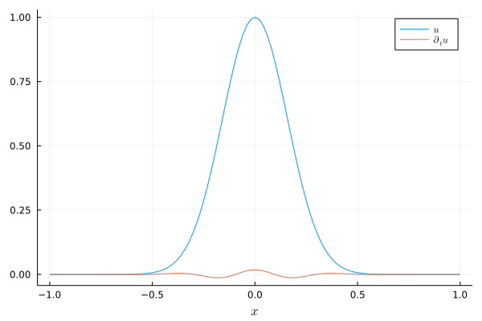

Wave equation
Consider the linear wave equation
\[\begin{aligned} \partial_t^2 u(t,x) &= \partial_x^2 u(t,x), && t \in (0,T), x \in (x_{min}, x_{max}), \\ u(0,x) &= u_0(x), && x \in (x_{min}, x_{max}), \\ \partial_t u(0,x) &= v_0(x), && x \in (x_{min}, x_{max}), \\ \text{boundary conditions}, &&& x \in \partial (x_{min}, x_{max}). \end{aligned}\]
SummationByPartsOperators.jl includes a pre-built semidiscretization of this equation: WaveEquationNonperiodicSemidiscretization. Have a look at the source code if you want to dig deeper. In particular, you can find applications of derivative_left, derivative_right mul_transpose_derivative_left!, and mul_transpose_derivative_right!. Below is an example demonstrating how to use this semidiscretization.
using SummationByPartsOperators, OrdinaryDiffEq
using LaTeXStrings; using Plots: Plots, plot, plot!, savefig
# general parameters
xmin = -1.
xmax = +1.
tspan = (0., 8.0)
u0_func(x) = exp(-20x^2)
v0_func(x) = zero(x)
# HomogeneousNeumann, HomogeneousDirichlet, and NonReflecting BCs are available
left_bc = Val(:HomogeneousNeumann)
right_bc = Val(:HomogeneousDirichlet)
# setup spatial semidiscretization
D2 = derivative_operator(MattssonSvärdShoeybi2008(), derivative_order=2,
accuracy_order=4, xmin=xmin, xmax=xmax, N=101)
semi = WaveEquationNonperiodicSemidiscretization(D2, left_bc, right_bc)
ode = semidiscretize(v0_func, u0_func, semi, tspan)
# solve second-order ODE using a Runge-Kutta-Nyström method
sol = solve(ode, DPRKN6(), saveat=range(first(tspan), stop=last(tspan), length=200))
# visualize the result
plot(xguide=L"x")
plot!(evaluate_coefficients(sol[end].x[2], semi), label=L"u")
plot!(evaluate_coefficients(sol[end].x[1], semi), label=L"\partial_t u")
savefig("example_wave_equation.png");
Advanced visualization of different boundary conditions
Let's create animations of the numerical solutions for different boundary conditions.
using Printf; using Plots: Animation, frame, gif
function create_gif(left_bc::Val{LEFT_BC}, right_bc::Val{RIGHT_BC}) where {LEFT_BC, RIGHT_BC}
xmin = -1.
xmax = +1.
tspan = (0., 8.0)
u0_func(x) = exp(-20x^2)
v0_func(x) = zero(x)
D2 = derivative_operator(MattssonSvärdShoeybi2008(), derivative_order=2,
accuracy_order=4, xmin=xmin, xmax=xmax, N=101)
semi = WaveEquationNonperiodicSemidiscretization(D2, left_bc, right_bc)
ode = semidiscretize(v0_func, u0_func, semi, tspan)
sol = solve(ode, DPRKN6(), saveat=range(first(tspan), stop=last(tspan), length=200))
anim = Animation()
idx = 1
x, u = evaluate_coefficients(sol[idx].x[2], D2)
fig = plot(x, u, xguide=L"x", yguide=L"u", xlim=extrema(x), ylim=(-1.05, 1.05),
label="", title=@sprintf("\$t = %6.2f \$", sol.t[idx]))
for idx in 1:length(sol.t)
fig[1] = x, sol.u[idx].x[2]
plot!(title=@sprintf("\$t = %6.2f \$", sol.t[idx]))
frame(anim)
end
gif(anim, "wave_equation_$(LEFT_BC)_$(RIGHT_BC).gif")
end
create_gif(Val(:HomogeneousNeumann), Val(:HomogeneousNeumann))
create_gif(Val(:HomogeneousNeumann), Val(:HomogeneousDirichlet))
create_gif(Val(:HomogeneousNeumann), Val(:NonReflecting))